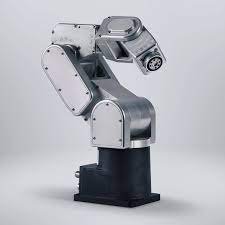

Bem-vindo ao meu portfólio!
Este site tem como objetivo apresentar os projetos e atividades desenvolvidos durante esse período, abrangendo os principais conteúdos estudados: linguagem de programação, automação industrial, redes de computadores, banco de dados e ciência de dados.
Através deste portfólio, compartilho minha jornada de aprendizado e demonstrarei como apliquei os conhecimentos adquiridos nessas áreas. Explore cada seção do site para obter detalhes sobre os projetos realizados, evidenciando minhas habilidades e competências. Agradeço a todos os professores e colegas que contribuíram para o meu crescimento, e espero que esse portfólio demonstre meu comprometimento e entusiasmo pela análise e desenvolvimento de sistemas.
-

Linguagem de Programação
""A programação é o ato de pensar de forma criativa para resolver problemas, é a arte de criar soluções com linhas de código." - Douglas Crockford
Conteúdo e Projetos -

Automação Industrial
"A automação industrial é a chave para a produtividade, qualidade e segurança nas indústrias, tornando possíveis grandes avanços tecnológicos." - Henry Ford
Conteúdo e Projetos -
Redes de Computadores
"Ao conectar computadores em uma rede, criamos um mundo de possibilidades onde a informação flui e as distâncias se encurtam." - Tim Berners-Lee
Conteúdo e Projetos -

-